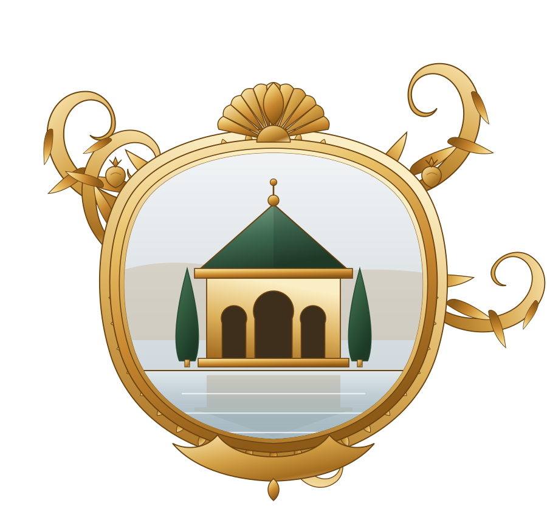

A house, and nothing else
Water and shade
The munya
In Umayyad al-Andalus, the munya was the walled estate to which the aristocracy of Córdoba withdrew from the city. Irrigated gardens, running water, orchards, horses, poetry — and very few people. Munyat al-Ruṣāfa, Munyat al-Rummāniyya, Munyat ʿAjab.
The word passed into Spanish as almunia. It names neither a town palace nor an inn: it names the place where one stops being in the city.
It is not a word from the hotel trade. It is the name of something that existed, and that was not open to the public.
In Fez
A house of the medina, under restoration according to the craft and with the trades of the city: zellij, carved plaster, cedar, forged iron, undyed leather, lime.
Water, shade, a garden. The day takes the shape the five calls give it, and the night is silent.
The house is being restored as a dār aḍ-ḍiyāfa دار الضيافة — the old name for the house a family, a city or an institution keeps in order to receive: the one where you lodge the guest you do not take to an inn.
In Fez the great houses always kept a wing for those who could neither be refused nor displayed. It is that use the house takes up again.
Very few people at a time, and never more. It is not open to visitors.
An-Nudama
The circle that gathers there bears an old name: النُّدَمَاء — an-nudamāʾ, the companions.
In the courts of old, the nadīm was the man admitted in the evening to the sovereign's private company. Neither official nor servant: his charge was to be there. What was expected of him was bearing, measure, few words — and above all that he keep what he had heard.
المجالس بالأمانة
Assemblies are held in trust.
The rule is old. It has not changed.
The zellij, the plaster and the wood of this house
were made in Fez, by hands that have made them for a thousand years.
The house does not receive the public. One does not come of one's own accord: one is brought.
There is nothing else to read on this page, and there will be nothing else.